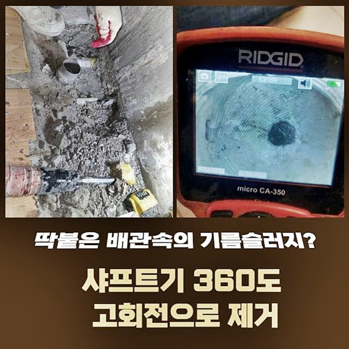
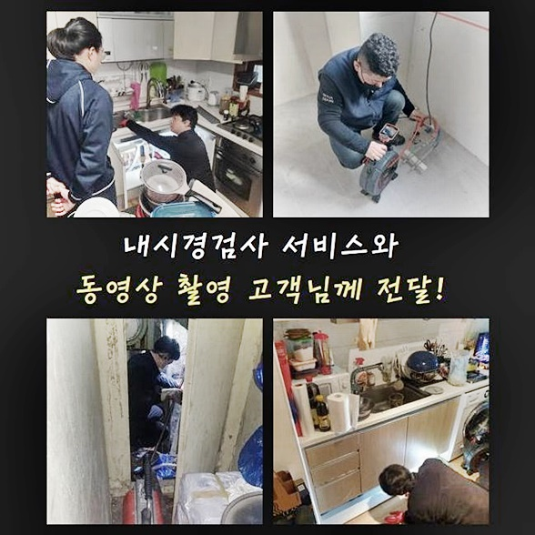
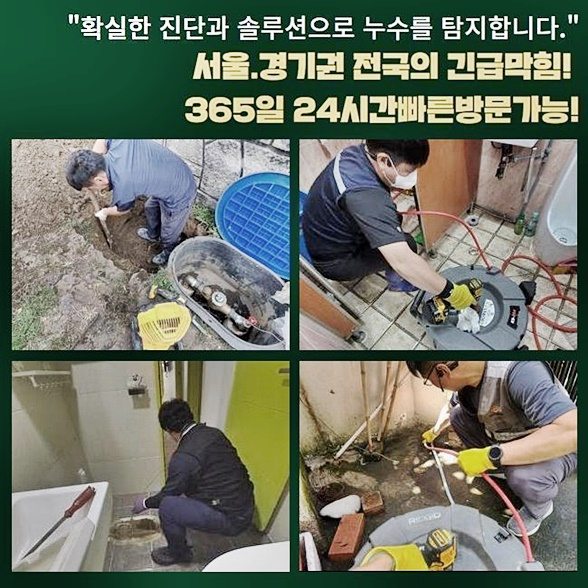
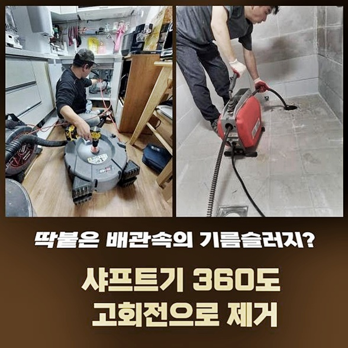
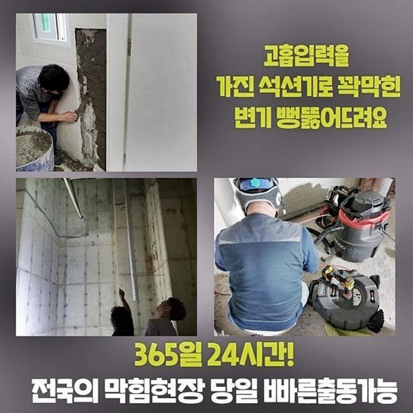

🏠 성남 금광동하수도역류 금광동 하수구뚫는곳 설비공사
성남 싱크대막힘 전문 시공 후기

📋 작업 개요
- 위치: 성남
- 서비스 유형: 싱크대막힘, 하수구막힘, 배관막힘, 역류해결, 뚫는업체, 배관청소, 고압세척, 설비공사
- 작업 일시: 2024. 8. 8. 10:32
- 업체명: 하수구수사대 (010-5615-2118)
🔍 문제 상황
성남 금광동하수도역류 금광동 하수구뚫는곳 설비공사
씽크대쪽에서 물이 안빠지는 증세가 생기면 주방의 배수관로와 다른곳에 설치된 배관들도 보건적으로 좋지못한 영향을 끼치는데요
갑작스럽게 물이 안빠지는 증상이 생기게됐는데 조치에 대해 힘쓰지않는다면 바닥부분으로 새어나올 가능성이 있고 아래세대에도 피해를 끼칠 수 있죠
해결하기 힘든 사안이 아닐것이다 가벼히 생각하시면 곧이어 또다른 증상이 생기고 그 시점에 쉽게 해결해보고자 해도 괄목할만한 개선이 안되죠
문제 발생 시 중한 증세가 발생되지 않게 하게끔 어떠한 방법들을 써서 해결해야되는지 여러분과 살펴보도록 해요
관로에 증상들이 발생된 곳으로 문의가 접수된 후 저희전문진은 바로 당도했어요
배수장애가 생긴 시점으로부터 며칠이 지났었고 왜 그런지 질문하니 고객분의 경우 심한 증상이 못된다 생각하셔서 상담이 늦춰진것이라 하셨죠
반대로 통수오류의 증세가 심각해지는 바람에 해결요청을 하신것이였죠
문제들을 정확하게 관찰할 목적으로 하수관을 점검하니 하수관에서 하수가 솟아오르는 증세가 보여졌죠
이것은 가벼운 문제라기보다 무거운 문제인것을 반증하는 신호죠
곧이어 내시경장비를 관로로 투입시켜 주시해보니 초입부터 엉망인것을 온전하게 알게되었어요

🔎 원인 분석
💡 전문가 진단: 정밀 진단 장비를 사용하여 슬러지의 고착 여부를 판명하고 타격/세척 작업을 실시했습니다.
문제들을 없애도록 내시경을 뺀 후 석션장치를 가용해 하수들을 제거시키는 청소를 시작했는데요
청소를 실시하며 석션장치의 앞부분을 틈들이 생기지않게 압박해서 잔해물이 청소되도록 힘을 주고있는게 중요하겠습니다
석션기기를 간단하게 작동시켜서는 효과를 극대화 시킬 수 없기에 압박한 뒤 빨아당겼어요
일반적으로 스프링장치를 투입시켜 막히게 된 지점을 바로 잡는 현장도 쓰이지만 오늘의 경우 이물을 빈틈없이 없애주는 것이 곧장 증상을 최소화하는데 큰 효과를 보이기때문에 석션기 가용을 선정한것입니다
지속적으로 오염물을 제거시키고 다시 내시경기기를 삽입한 뒤 심층부까지 살펴보았습니다
잔해물은 거의 없어졌으나 현재 라인의 내측은 통로없이 막힌 상황이었어요
막혀버린 곳을 해결할 목적으로 맨땅의 헤딩 식인 흡입과정은 크게 도움이 되지않는다 생각했습니다
곧이어 스케일링을 위한 샤프트의 가용을 진행키로 했죠
바로 장비들을 선정해 수행해줄 작업에관해 고객에게 정확하게 안내했어요
배수 장애에 있어서 여러분들도 전 단계의 흐름을 아시는게 큰 역할을 하므로 정확한 내용전달로 이해되실 수 있게 하고 증세를 올곧이 해결하고자 심혈을 기울였어요
배수장애의 경우 갑자기 발생되나 알맞은 조치들이 없으면 시간낭비와 비용들을 감수할 수 밖에 없는걸 모르시는 분들이 많아요

🔧 작업 과정
설명 그 다음으로 의뢰자께선 곧이어 진행을 바라셔서 곧이어 준비했어요
가용해야할 것은 샤프트기와 점검에 이용되었던 내시경기기로 축적된 이물을 분쇄시켜 청소시켜요
최종적으로나서 샤프트기기를 배수관으로 투입시켜서 내시경장치까지 사용해 벽에 붙은 오염원을 청소해주는 작업들을 진행시켰는데요
외부에서 확인할 수 없는 하수도를 관찰하며 청소를 이어가야 배수관에 누적된 오염물을 온전하게 제거해줄 수 있겠습니다
곧이어 이것과같이 시공을 진행해주는 과정에서는 내시경장치를 이용해 의뢰인분도 확인할 수 있기에 신뢰있는 작업들을 온전하게 느끼실 수가 있습니다
계속하여 아래 누적된 오염물을 청소해주면 자연스레 심층부에는 이물질들이 누적되는데 석션을 운용시켜 빨아들여줍니다
문제들을 발생시키는 오염원을 사라지게끔하고 내시경기기로 심부까지 체크해보는데 전체적으로 완벽히 환골탈태한 하수관을 고객과 검수했습니다
이처럼 저희들은 청소된 하수관을 의뢰인과 함께 체크합니다
잔해가 많은 상황에서 관로가 막히게된 것을 시정하지 못할 시 역류문제들이 생긴다거나 향후 악취가 발발하니 해당 사항을 알아두셨다가 과정들을 진행하시길 권해드려요
끝으로나서 타 장소에 하수관에 결함이 발발하여 달려갔는데 방문드려 배관이 어떤지 내시경기기로 신속히 확인했습니다
체크해보니 여기저기 기름때가 줄지어 누적된 탓에 이물질들이 연결부에 흡착하게되고 굳게된걸 알 수 있었어요
즉시 청소를 준비했죠
먼저 어렵지않게 해결가능한지 확인 차 바닥부분으로 하수관로에 석션을 넣어서 잔해물을 흡입하는 수리를 진행시켰죠
빠르게 작업들을 꾸준히 속행해주고 안의 모습들을 관찰하니 아래에 잔해가 완벽하게 빠져나오지 않은 모습을 목격했습니다
곧이어 놓친 부분을 목표로 설정하고 세척을 이어나갔습니다
이용해야할 장치는 샤프트기기로 배수관으로 투입시켜 앞코에 붙어있는 노커부분을 회전하여 오염물을 빠른 시간 내 걷어내는 작업들을 진행했습니다
신속한 회전이 되며 오염물을 분쇄시키고 석션도구로 탈락된 이물을 즉각 처리해주었습니다


✅ 작업 완료
그 다음으로 내시경기기로 문제가 있진않은지 점검해보았습니다
마지막으로 배수관으로 청수를 흘려보내주며 배수상태를 확인하니 문제없이 흐르는걸 목격했어요
안정적으로 막혀버린 배수관을 고쳐야하는 시점에 편히 저희배관 해결사들을 부르시면 통수관련한 수리를 실시해요
접수를 거쳐 고객님 댁으로 1시간을 넘기지않고 방문드리고 있으므로 우려할 일이 없으십니다
끝으로 원하시는 일정이 있으시면 지정가능하니 이러한 점도 참고 부탁드립니다!


⚠️ 주방 싱크대 배관 막힘 예방 수칙
- ✅ 기름기가 묻은 식기나 프라이팬은 설거지 전 키친타올로 반드시 기름때를 닦아내세요.
- ✅ 주기적으로 싱크대 개수대에 뜨거운 물을 가득 받아 한 번에 내려 배관 내부 기름을 씻어내세요.
- ✅ 배수구 거름망을 미세한 필터로 사용하시고 음식물 찌꺼기가 틈으로 새어 들지 않게 관리하세요.
- ✅ 베이킹소다와 식초를 뜨거운 물과 함께 일주일에 한 번씩 부어주면 배관 살균과 막힘 예방에 좋습니다.
💡 핵심 정리
- 확실한 장비 작업(내시경 점검 및 샤프트 스케일링)으로 원인을 뿌리 뽑습니다.
- 작업 후 1년 이내에 동일한 부위 재발 시 100% 무상 A/S 서비스를 보장합니다.
- 서울 · 경기 · 인천 전 지역에 24시간 언제든 긴급 출동할 수 있도록 항시 대기 중입니다.
❓ 자주 묻는 질문 (FAQ)
🚨 성남 싱크대막힘 문제로 고민이신가요?
정확한 원인 진단과 확실한 시공으로 재발 없는 해결을 약속드립니다.
24시간 긴급 출동 | 서울 · 경기 · 인천 전지역 | 1년 내 재발 시 무상 A/S